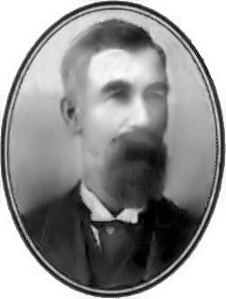
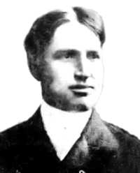
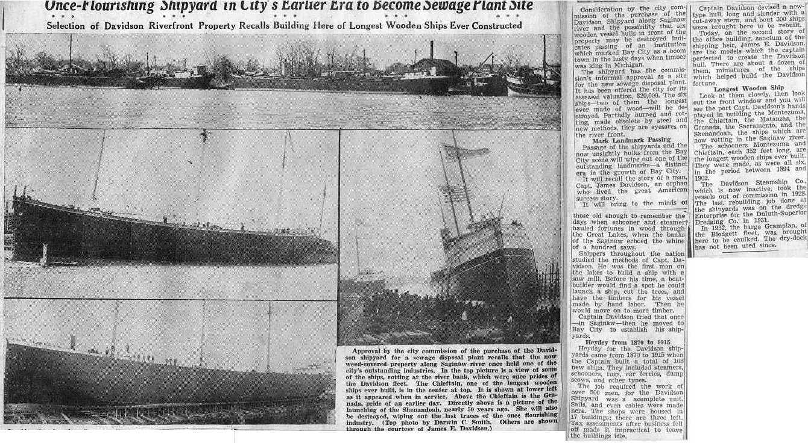

Davidson Shipbuilding Company (1871 - 1929)
Bay City, MI
Written by Alan Flood (August 2003)

Capt. James E. Davidson
(1841-1929)Capt. Davidson's parents, Joseph and Elizabeth (Smith) were natives of Scotland. They immigrated to Buffalo in 1828. Besides James, they had a son, John, and a daugher, Ellen. (See his Maritime Bio. for more.) |
Davidson
Three Generations of Heritage
With the passing of Edward C. Davidson on March 27, 1984, another family name linked with the
history of Bay City's early days is gone. The Davidson family's association with this area goes back three generations to Captain James Davidson.
James Davidson was born at Buffalo, New York in 1841. From his earliest years, Captain
Davidson's life was intimately tied with the sea and its commerce. As a very young man, he began
sailing on the Great Lakes and became a Master at the age of 19. In his early 20's, he left the
Lakes to sail the oceans of the world for approximately two years. On returning to the lakes, he
sailed as master and soon became a vessel owner. Shortly after, he spent time at the shipyards of
Buffalo and Toledo to learn wooden ship construction.
James Davidson began shipbuilding operations at West Bay City in 1871 with the building of the
schooner E. M. DAVIDSON at the site where the Fletcher Oil is now located. The following
year, he relocated his yard in Saginaw. Finding that location unfavorable to shipbuilding, Captain
Davidson returned to Bay City in 1873, purchased a site at the foot of Randolph street and began
building a sawmill and laying the keel of the steamship JAMES DAVIDSON. Prior to this time, it was
customary for a builder to lease a piece of land, build and launch a ship and then move on. The
ships in those days were entirely built by hand. The JAMES DAVIDSON was the first ship on the
lakes to be built with the timbers cut in a sawmill. While the vessel was still on the stocks, a fire
swept through the yard destroying the mill and badly damaging the steamer; the craft, however,
was rebuilt and completed for service the following year.
About this time, a business panic shook the country; and Captain Davidson was obliged to halt his
operations here and close the yard. During these uncertain times, he gave his attention to the
operation of his vessel interests. In 1880, Captain Davidson returned to his property here with a
large equipment of machinery and organized a shipbuilding force. He built the steamship
OCEANIA, then the largest craft on the lakes.
Over the years, Captain Davidson, enlarged his facilities, yard room, etc., to meet the steadily
increasing demands made upon the resources of the establishment. In 1887, the yard contained a
sawmill and two jig mills, but these were considered inadequate. In January 1888, Davidson completed a new band mill which was "the most thoroughly modern shipmill in the United States"
and supplied it with the latest improved machinery for working heavy timber and improved
punches for heavy iron work. Fire completely destroyed the new band mill in August of the same
year. The premises were immediately rebuilt, however, and furnished with additional tools and
appliances to meet the needs of the yard.
During its heyday, Davidson's Yard employed about 1,000 men and 150 teams of horses. Two
side tracks from the Michigan Central Railroad supplied the yard with oak timber, Material by
water came from Sebewaing and from up the Kawkawlin River. There were often five or six
vessels on the stocks at any one time, and some years he built and repaired as many as thirteen.
In addition to his shipbuilding operations here at Bay City, Captain Davidson operated an
extensive fleet of wooden steamers and schooner barges under the houseflag of the Davidson
Steamship Company. He would operate these vessels in the ore, coal, and grain trades in the great
ports of Buffalo, Cleveland, and Chicago they would "create the most favorable comment."
He was involved with grain interests at Buffalo and with the Frontier Iron Works at Detroit which
built some of the machinery for his steamers. He was founding member and served on the Board of Managers of the Lakes Carriers Association at Cleveland, Ohio.
The facilities at the yard reached their peak in 1900 with the building of the drydock. Captain
Davidson owned the old "WESTERN WORLD" drydock at another site downriver, but it had
become inadequate. As the timberlands of Michigan were being depleted, the focus of year
operations shifted from new construction to the repair and rebuilding of the wooden ships. The
new drydock was capable of handling the largest vessels afloat on the lakes and brought much
repair work to the yard.
In 1903, Captain Davidson, completed construction of the schooner barge MONTEZUMA. She
and her sister ship, the CHIEFTAIN, which was completed the previous fall, were, at 352 feet overall, the largest wooden vessels ever built on the lakes. They represented the last major
construction project undertaken at the yard. A few new hulls continued to be built until 1915, but
these were small lighter and mud scows which predominately were used in dredging the ships
around the yard.
During the entire span of his shipbuilding activities, Captain Davidson never converted his yard to build iron or steel ships. However, in 1902, in association with his son, James E. Davidson and his son-in-law, G.A. Tomlinson, Captain Davidson was intimately involved in the founding and
managing of the affairs of the Tomlinson Fleet Corporation of Duluth and Cleveland. This modern
fleet of large steel steamers operated in the ore, coal and grain trades on the lakes and continued
in operation with the active Davidson family participation until its demise in 1971.
The wooden steamers and barges of the Davidson fleet generally wintered here at Bay City, where
ongoing maintenance prolonged their lives. By the 1920s, however, the steamers
SACRAMENTO and SHENANDOAH, and their consorts MONTEZUMA, CHIEFTAIN, and
GRAMPIAN were "the proud leaders of the remaining wooden ships on the Great Lakes." The
age of the ships, new modern steel steamers, and changing economic conditions all combined to
spell the end of the wooden ship era. One by one the vessels were laid up here at the yard, and at
the end of the 1929 season, the Davidson Steamship Company ceased operations. It was said of
Captain Davidson, "He has gone quietly but makes no display, seemingly impressed with the
maxim that the value of life consists in being faithful in the work undertaken and to the trust
imposed."
On his passing on February 5, 1929, he was eulogized as a pioneer both for his technical
achievements in the shipbuilding industry and his efforts towards the prosperity of Bay City and
the state of Michigan.

James E. Davidson
With the death of James Davidson, the family interests were carried on by his son, James E.
Davidson. In addition to his involvement with the affairs of the Davidson shipyard and the
Tomlinson fleet, he was actively involved with the local banking community. He was chairman of
the board of the Bay Trust Company and President of the People's Commercial & Savings Bank.
In 1932, during the great depression, James E. Davidson, through his personal efforts, was able to
keep the People's Commercial Bank solvent thus protecting the saving of their investors. His bank
was the only bank in town not to fail. These successful efforts of his were reminiscent of those of
his father when, during the business panic of 1893, Captain James Davidson had stepped into the
breach and kept the local financial firs on a sound footing.
The Davidson shipyard closed in 1932, but James E. Davidson continued his family's association
with the shipbuilding industry as a member of the board of the American Shipbuilding Company
of Cleveland.
Edward C. Davidson, the third generation of this family, was born at Bay City on December 9,
1899. He was raised and attended in school in Bay City and later went on to the University of
Michigan where he was graduated in 1922 with a degree in Naval Architecture.
In 1929, he returned to Bay City to join his father in the firm of James E. and Edward C.
Davidson. During the Second World War, he served in the U.S. Navy with the rank of
commander. After his father's death in 1947, Ed Davidson continued the family's local affairs in
real estate and banking and in June, 1952 he was elected president of the Tomlinson Fleet
Corporation of Cleveland. He continued in this position until August 1971, when the vessels of the Tomlinson fleet were sold to the Columbia Transporation division of Oglebay Norton of Cleveland.
In 1972, the city of Bay City acquired the old Davidson shipyard property from Edward Davidson
and was used in developing the present Veterans Memorial Park. In 1982, the city mounted a six ton rudder of the Davidson steamer SACREMENTO and since has developed displays along the river to interpret the history of the shipyard area.
In 1992, Captain James Davidson was inducted into the National Maritime Hall of Fame at the
U.S. Merchant Academy at Kings Point, New York.
Pictorial History:
Below page is a slideshow pictorical pertaining to the Davidson Shipbuilding Company.
The following is a very large image of an article that appeared in the Bay City Times in 1940 which shows the remnants of the once busy Davidson shipyard along with historical notes.
Click to view full size of photo and 1940s article.
